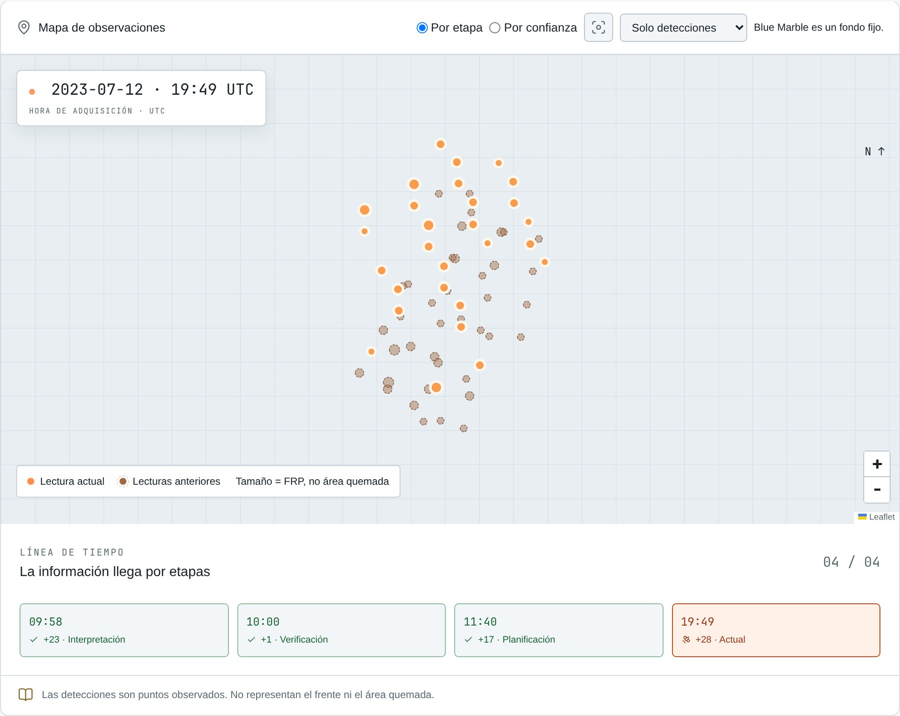
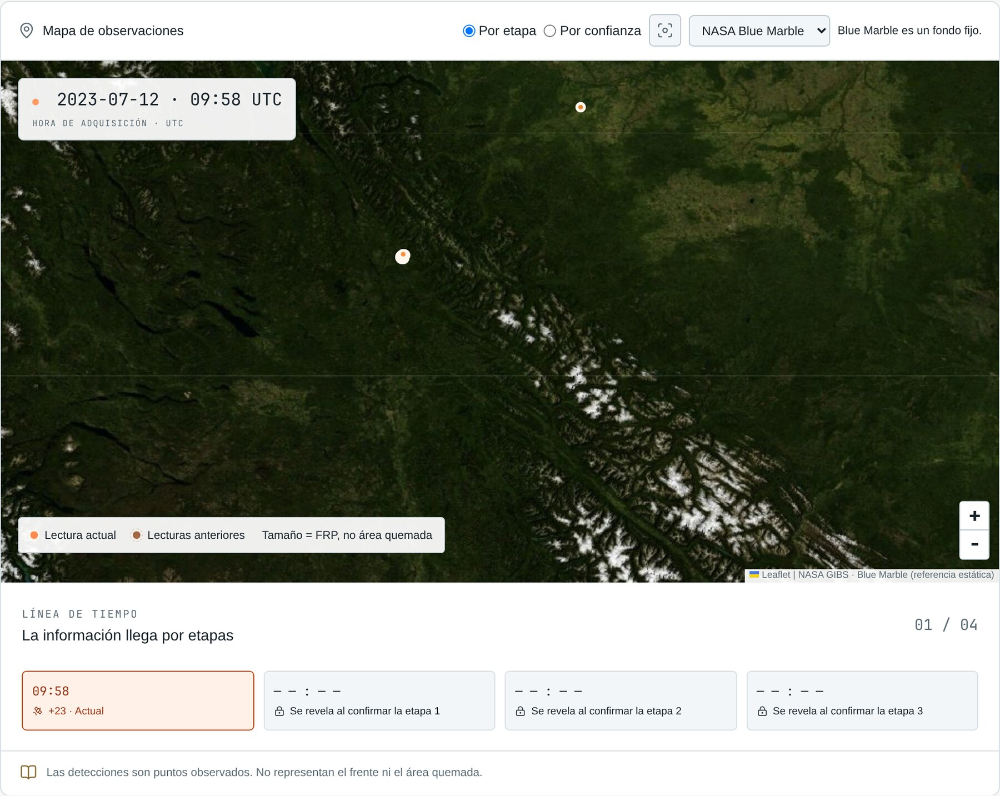
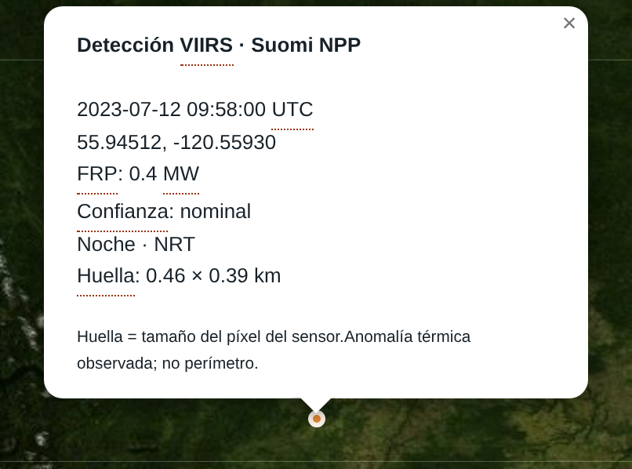
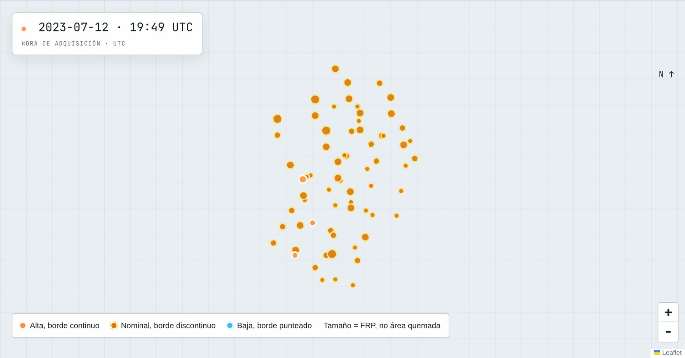
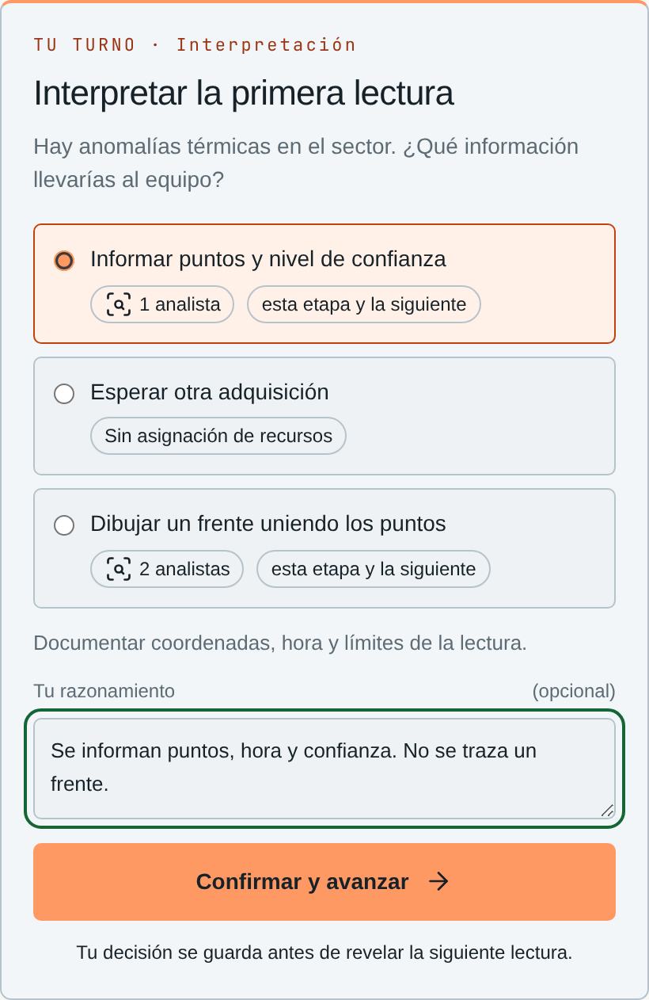
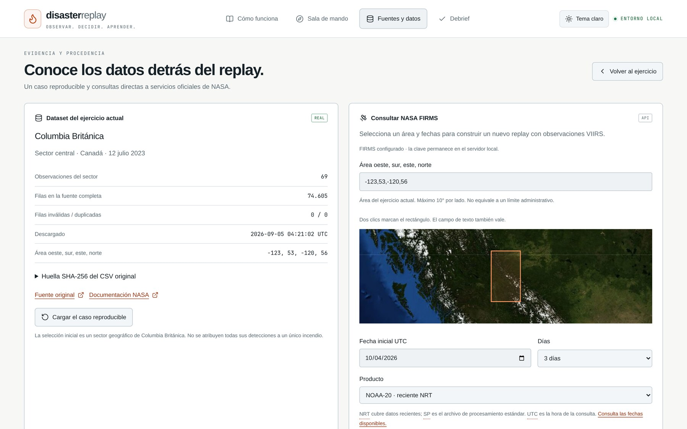
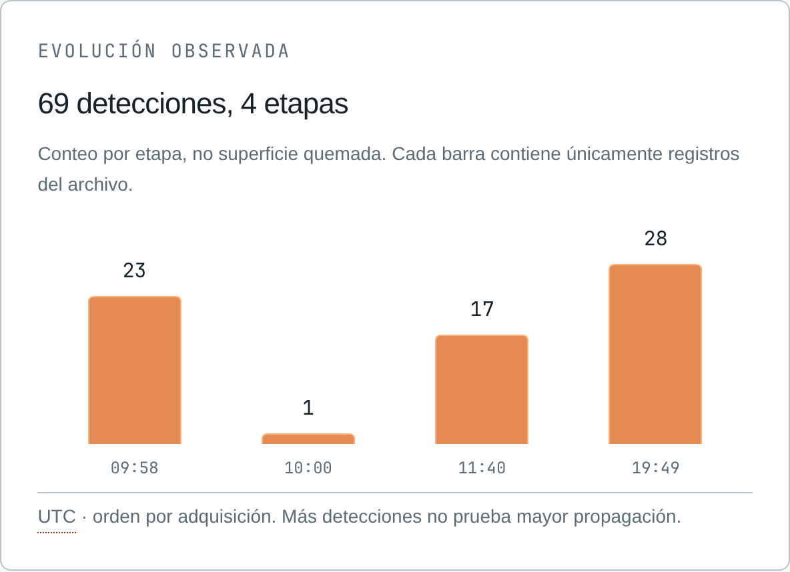
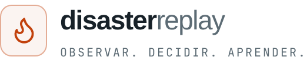

DisasterReplay.
Práctica de lectura de datos satelitales con detecciones reales de NASA FIRMS.

Una demostración práctica.
Un entorno local para ver qué se logra al trabajar con datos satelitales de NASA.
Entorno local
Corre en un solo computador. El caso incluido funciona sin conexión a internet.
Caso construido con datos reales
69 detecciones de la muestra oficial de NASA FIRMS del 12 de julio de 2023.
Un punto de partida
Con más datos de NASA, el mismo ejercicio puede crecer.

Sala de mando del ejercicio. Lectura de las 09:58 UTC.
Qué entrega un punto FIRMS.
El sensor VIIRS viaja en los satélites Suomi NPP, NOAA-20 y NOAA-21. Detecta anomalías térmicas en la superficie.
Hora UTC
Instante en que pasa el satélite
FRP
Potencia radiativa del píxel, en megavatios
Confianza
Baja, nominal o alta
Huella
Tamaño del píxel, en kilómetros
Satélite
Suomi NPP, NOAA-20 o NOAA-21
Día o noche
Condición de la pasada
Un punto es el centro de un píxel de unos 375 m. Puede contener uno o varios focos, u otra fuente de calor.

Ventana de una detección en el mapa del ejercicio.
12 de julio de 2023.
Confianza: 66 nominal y 3 alta. FRP máxima: 128 MW.

Detecciones por nivel de confianza. El recorte geográfico puede mezclar más de un foco.
La práctica, por etapas.
Interpretación
Informar puntos, hora y confianza.
Verificación
Pedir una fuente independiente que confirme la lectura.
Planificación
Preparar capacidad sin suponer viento, rutas ni población.
Continuidad
Entregar al relevo la evidencia, sus límites y los pendientes.
La decisión queda en la bitácora. Los puntos del mapa se mantienen.

Qué se puede hacer con el dato.

Fuentes y datos. Procedencia del caso y consulta a NASA FIRMS.
Leer cada punto
Hora, FRP, confianza y huella en una ventana por detección.
Comparar pasadas
Las lecturas se revelan por etapa y se pueden repasar.
Consultar otra área o fecha
Productos VIIRS de NOAA-20, NOAA-21 y Suomi NPP, hasta 5 días, con una clave gratuita de NASA.
Cerrar con un debrief
Puntaje didáctico con rúbrica visible y registro exportable en JSON.
Límites de la lectura.
Un punto es un píxel
Marca calor en un cuadro de unos 375 m. El perímetro y el área quemada quedan sin medir.
Sin punto, sin conclusión
La ausencia de una detección deja abierta la pregunta por la actividad en el terreno.
El conteo depende del muestreo
Más puntos pueden venir de otra pasada, otro satélite o otra confianza, y no de un avance mayor.
El archivo termina antes
Que los datos terminen no declara un incendio controlado. Esa confirmación llega desde el terreno.

Conteo por etapa. Más detecciones no prueba mayor propagación.
A qué puede escalar.
Más datos de NASA dentro de la misma práctica.
Más casos
Otras fechas y regiones con el mismo flujo, en áreas de hasta 10° por lado y hasta 5 días por consulta.
Más fuentes de NASA
Otros sensores que FIRMS ya publica, como MODIS y satélites geoestacionarios, y capas de GIBS como contexto del mapa.
Más etapas de práctica
Rúbricas nuevas que usan viento, lluvia o reportes de campo cuando existen como dato observado.
Entrenamiento en lectura de datos satelitales para cuerpos de bomberos, policía, protección civil y otros equipos que deciden con información incompleta.
Observar.Decidir.Aprender.

Datos: NASA FIRMS, parte de NASA ESDIS.
Proyecto independiente, sin aval de NASA.
La rúbrica es didáctica y no reemplaza un protocolo de respuesta.